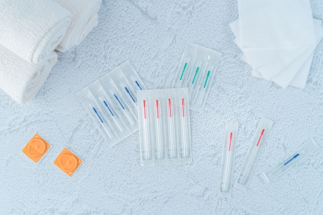
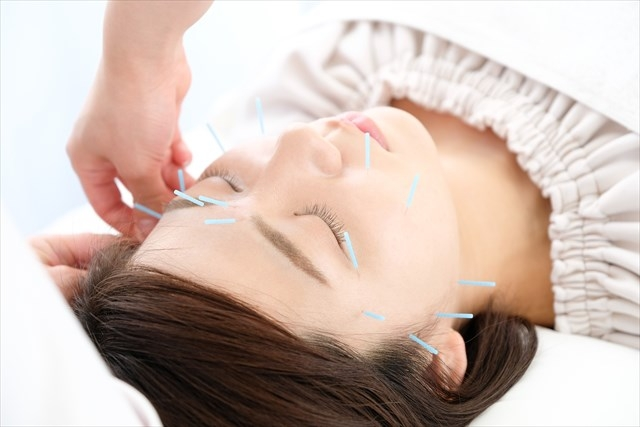
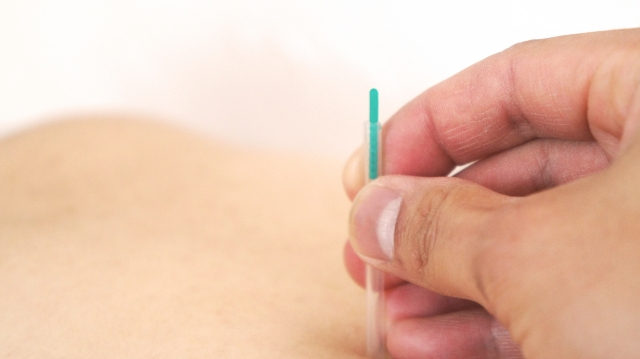
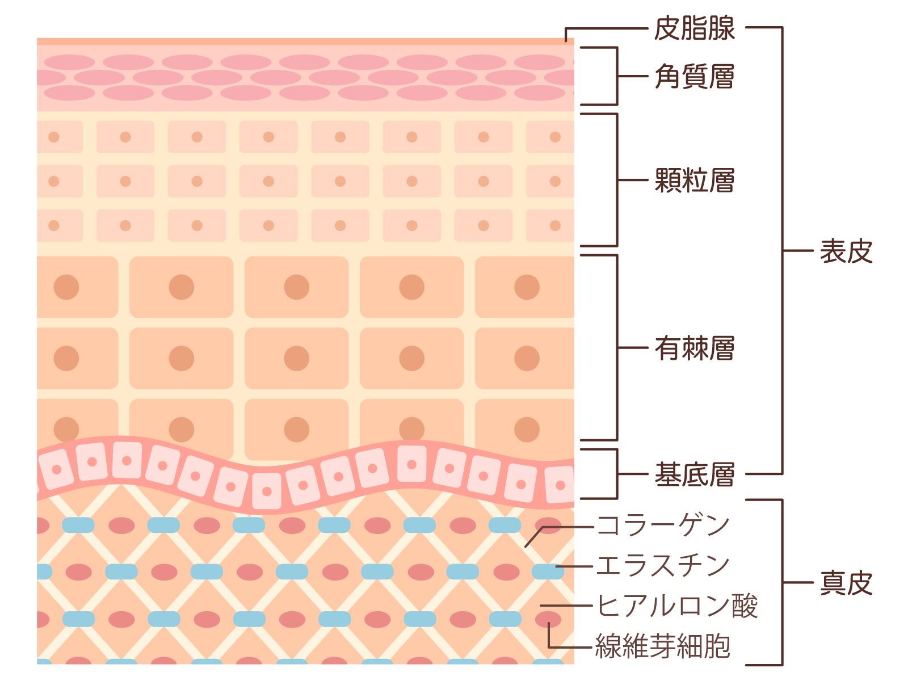
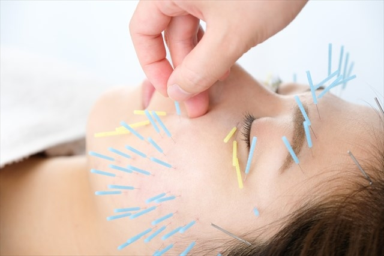
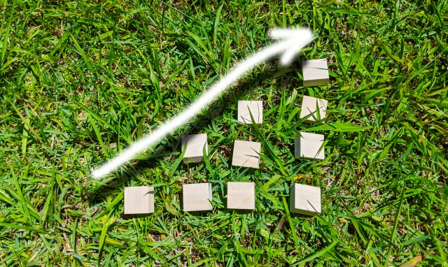
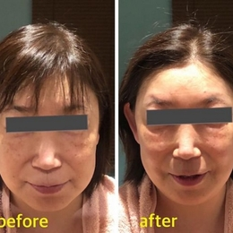
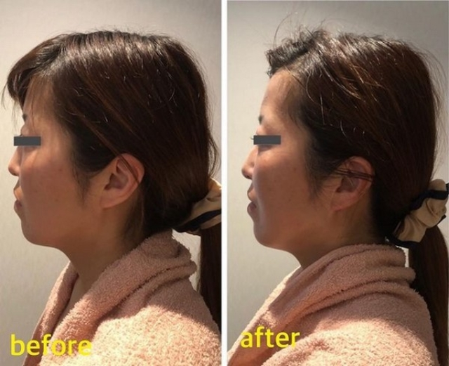
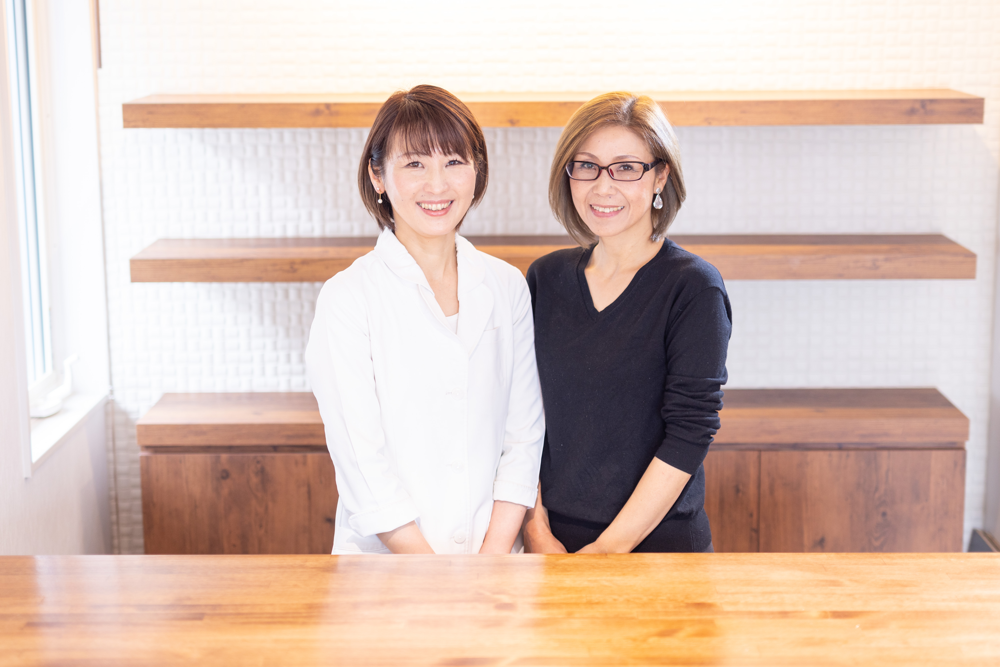

- ご予約・ご相談 029-279-8639

美容鍼の効果を感じるのは何回目？
正しい頻度や通い続けた人の写真などもご紹介！
美容鍼の効果を実感できる施術回数や頻度が気になる方も多いいのではないでしょうか。
この記事では、美容鍼の効果の持続期間や効率的な頻度などもご紹介します。また、美容鍼を続けた人の結果をビフォーアフター写真を使ってご紹介いしています。水戸市のRIO鍼灸サロンでは、美容鍼の施術も行っておりますので、ぜひチェックしてみてください。
～目次～
美容鍼の効果を感じるのは何回目？

美容鍼は即効性がある施術であるため、多くの方がその場で肌のたるみや小顔・リフトアップなどの効果を実感されます。
個人の症状によっては、初回の施術で効果が実感できない方もいらっしゃいますが、施術を数回受けることで症状が改善されていきます。
美容鍼とは？

美容鍼とは、東洋医学に基づいて、肌の深部へアプローチできる美容法です。エステなどではアプローチできない細胞や表皮層などに直接刺激することができるため、より美容効果が期待できます。
お顔の肌は「表皮」「真皮」「皮下組織」の3層から成り立っています。お顔の肌に鍼を打ち真皮に微小な傷をつけることで、肌の自然治癒力により「コラーゲン」や「エラスチン」の生成が促進され、お肌のハリを取り戻します。
また、美容鍼使用する顔に打つ針の太さは、0.14～0.18mmであるため、それほど痛みがありません。

美容鍼の効果

美容鍼の特徴は、とにかく即効性があることです！施術を受けた直後から、小顔・リフトアップ、たるみ、ほうれい線、シワなどのお悩みに対する効果を感じられます。
効果①肌の悩み改善
お顔に美容鍼を打つことで、表情筋や細胞への直接アプローチにより、以下のような効果を実感する人もいます。
- 小顔・リフトアップ
- ハリ・たるみ
- シワ・ほうれい線
- ニキビ改善
- 肌質改善
効果②自律神経を整える
美容鍼は、お顔の美容だけでなく自律神経や女性ホルモンのバランスを整える効果もあります。以下のような効果を実感する人もいます。
- 不眠症改善
- 眼精疲労改善
- ホルモンバランス
効果③自然治癒力の向上
お顔のツボに美容鍼を打ち刺激することで、細胞が活性化して人間が本来持っている「自然治癒力」を高めることが出来ます。
美容鍼の効果的な頻度は？

一般的に、施術を重ねるごとに細胞が活性化されるため、美容鍼の効果の持続時間も長くなる傾向があります。
最初の月は週１回のペースがおすすめ！
個人差はあるのですが、初めて施術を受けられる方は、美容鍼の効果を定着させるためにも1～2週間に一度の頻度で通っていただくのをおすすめします。効果が定着してきたら鍼灸師と相談して、効果を長く実感できるように、無理のない範囲で頻度を少なくしていきましょう。
月1～2回が最適な頻度！
一般的に、施術を重ねるごとに美容効果の持続時間も長くなる傾向があります。美容鍼でお肌の細胞を刺激することで、細胞が活性化してコラーゲンやセラミドなどの分泌を促進させるためだと考えられています。また、人間が生まれながらにして持っている「自然治癒力」も高まるため、ケガや病気の治りが早くなるなどの効果も期待されます。
そのため、症状が改善した後も月1～2回程度のペースで通ってケアを続けることをおすすめします。
美容鍼の効果が持続する期間
美容鍼の効果が実感できるタイミングは2度あります。施術後すぐにわかる「直後効果」と、2日後にわかる「事後効果」の2つのタイミングです。
① 施術直後に実感する「直後効果」
美容鍼をしてその場で実感できる効果のことを直後効果といいます。
具体的に、
- たるんだお肌のリフトアップ
- むくみの解消
- シワ・ほうれい線の改善
- 眼精疲労の改善
などが挙げられます。
② 2日後に実感する「事後効果」
施術して、2～3日後に実感できる効果のことを事後効果といいます。
具体的に、
- お肌のハリ感・弾力アップ
- 化粧水や美容液の浸透力アップ
- シワ・ほうれい線
- ニキビ、ニキビ跡の改善
- 毛穴が目立たなくなる
などが挙げられます。
RIO鍼灸サロンで施術を受けた人のビフォーアフター写真
RIO鍼灸サロンで美容鍼の施術をお受けになった患者様の症例写真です。
小顔・リフトアップ、肌のたるみなどの施術事例としてご覧ください。


口コミ
ゲストさん
(60代/女性)
(60代/女性)
長年のコンプレックスの顔のエラが美容鍼で満足することができました。エステ等は信頼が大切だと思います。私はとにかく沢山のエステや美容鍼にいきました。どこも良くして頂いたのですが効果に満足したのはこちらが1番です。
水戸市で美容鍼を受けるならRIO鍼灸サロンがおすすめ！

水戸市のRIO鍼灸サロンは美容鍼灸サロンであり、お客様のお悩みに合わせた施術をご提案いたします。
水戸市で美容鍼の施術を受けたいという方は、ぜひご相談ください。